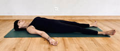
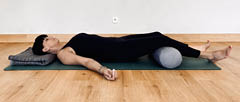

4.4.3.4. Oddech fali
Muzyka relaksacyjna z dźwiękami morza lub oceanu pozwoli łatwiej wprowadzić uczestnika w stan relaksu i oddech. Wykonanie ćwiczenia:
- połóż się w pozycji leżenia na plecach;
- stopy rozłóż na szerokość bioder, ręce ułóż wzdłuż tułowia, dłonie skierowane do sufitu;
- jeżeli w tej pozycji odczuwasz dyskomfort w odcinku lędźwiowym lub szyjnym, pod głowę podłóż koc, a pod kolana zrolowany koc lub wałek do jogi (ryciny V.4.7–V.4.8);
- oddychaj swobodnie, pozwól, aby twoje ciało miękko opadało na matę lub łóżko;
- połóż dłonie (połączone delikatnie czubkami palców) poniżej swojego pępka;
- poczuj swój oddech, rozluźnij ramiona;
- wyobraź sobie, że stoisz nad brzegiem morza i obserwujesz przypływające i odpływające fale;
- rozluźnij brzuch, zrób delikatny wdech przez nos i poczuj, jak rozpoczyna się głęboko w brzuchu, na wysokości twoich dłoni;
- wyobraź sobie, że twój oddech jest jak rozpoczynająca się w morzu fala, która idzie do góry swobodnie, aż do linii obojczyków;
- następnie wykonaj miękki i powolny wydech przez nos i poczuj, jak fala cofa się do głębin brzucha;
- zauważ, czy oddychając, nie aktywujesz mięśni twarzy, szyi i barków;
- puść napięcie w ciele, niech twoje barki luźno opadną do podłogi lub na materac, a szyja pozostanie miękka;
- powtórz oddech fali 3–5 razy i następnie wróć do swojego naturalnego rytmu;
- pozostań w pozycji tak długo, jak tego potrzebujesz.
Rycina V.4.7.
Pozycja leżenia tyłem
Rycina V.4.8.
Pozycja leżenia tyłem z pomocami

Fizjoprofilaktyka – higiena snu i techniki relaksacyjne
